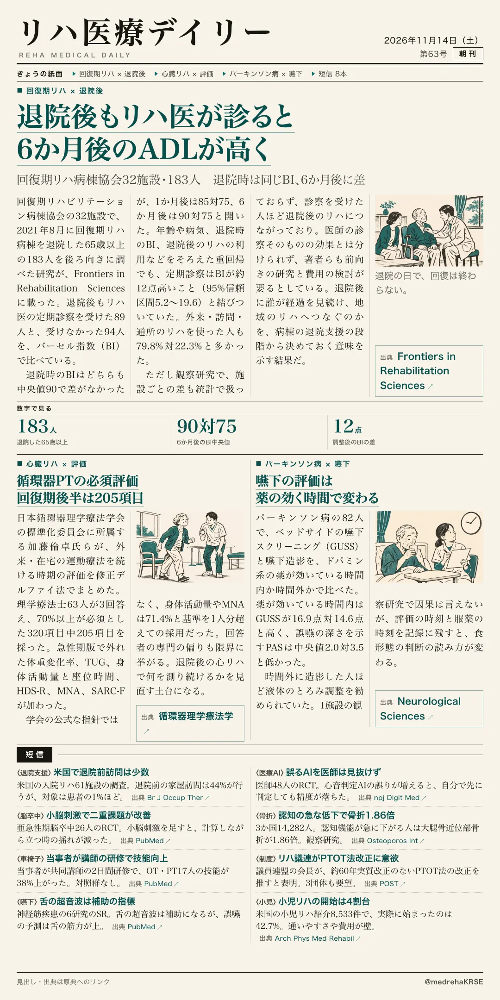
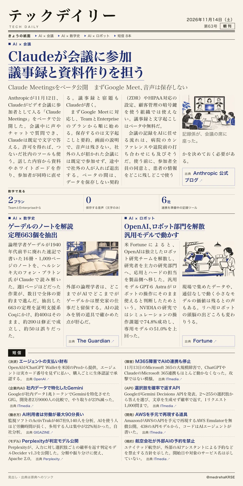

リハ医療デイリー
退院後もリハ医が診ると6か月後のADLが高く
回復期リハ病棟協会32施設・183人 退院時は同じBI、6か月後に差
回復期リハ病棟を退院した高齢者を、退院後のリハ医の定期診察の有無で比べた。

テックデイリー
Claudeが会議に参加 議事録と資料作りを担う
Claude Meetingsをベータ公開 まずGoogle Meet、音声は保存しない
Anthropicが、Claudeをビデオ会議の参加者にする機能を公開した。

回復期リハ病棟協会32施設・183人 退院時は同じBI、6か月後に差
回復期リハ病棟を退院した高齢者を、退院後のリハ医の定期診察の有無で比べた。

Claude Meetingsをベータ公開 まずGoogle Meet、音声は保存しない
Anthropicが、Claudeをビデオ会議の参加者にする機能を公開した。
